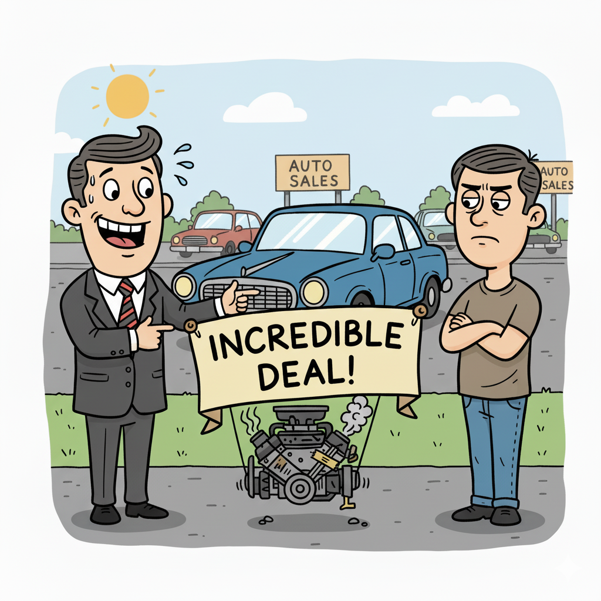
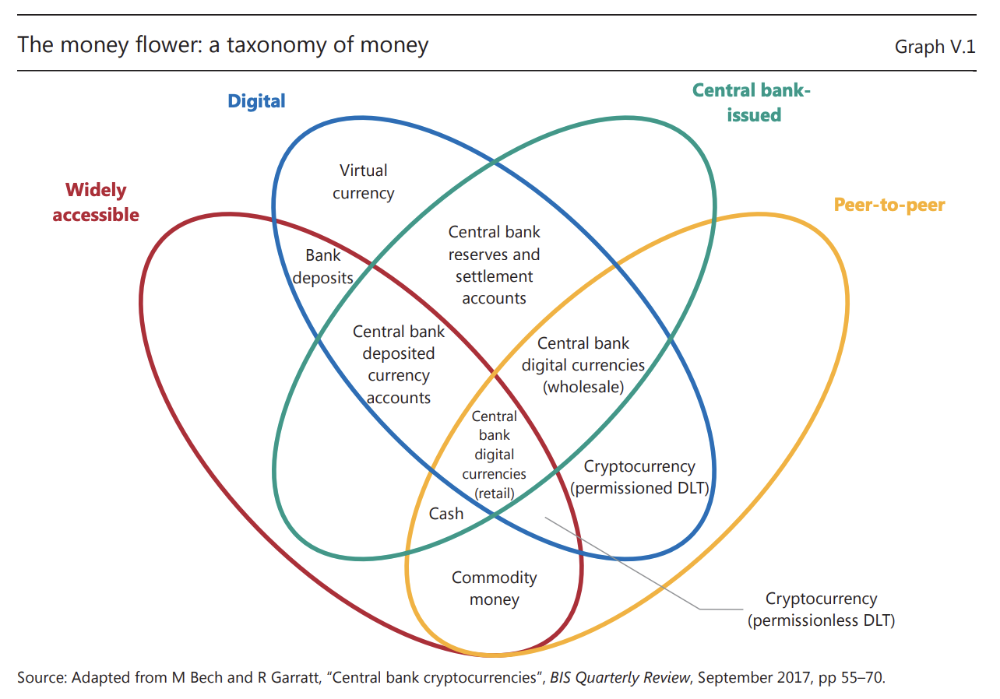

Section I: Introduction · Lesson 04-IN
Money, Institutions, and the Case for Alternatives
10-Year Savings Poll
If you had to store your life savings for 10 years, would you pick:
- U.S. dollars in a bank account
- Physical gold
- Bitcoin
- The stock market (e.g., an S&P 500 index fund)
- Something else / a mix?
Agenda: Our Guiding Questions
What is money, really? And where did our current system come from?
How is our financial system supposed to work?
What are its hidden vulnerabilities and single points of failure?
Why was a technology like Bitcoin invented in the first place?
What is Money? A Social Technology
Money is a tool that serves three functions:
- Medium of Exchange
- Eliminates the “coincidence of wants” problem of barter.
- Unit of Account
- Provides a common measure of value; a pricing yardstick.
- Store of Value
- Allows you to save purchasing power for the future.
Key Idea: Money isn’t inherently valuable. It’s a social agreement—a technology we invented to coordinate economic activity.
A Brief History of Money’s Form
The Turning Point: Ending Bretton Woods
On August 15, 1971, the global monetary system was fundamentally changed by a single announcement.
The Old System (Bretton Woods):
- USD was the world’s reserve currency.
- USD was convertible to gold at a fixed rate: $35 per ounce.
- Other major currencies were pegged to the USD.
- This created a global gold-exchange standard.
The “Nixon Shock”:
- Facing dwindling gold reserves and international pressure, President Nixon unilaterally suspended the dollar’s convertibility to gold.
- This act severed the last link between the world’s major currencies and a physical commodity.
The Modern Financial Architect: Central Banks
In the post-1971 world, central banks manage the fiat money system.
U.S. Federal Reserve Mandate:
- Price Stability: Keep inflation low and predictable.
- Maximum Employment: Foster economic conditions for job growth.
Core Functions:
- Conducting monetary policy (e.g., setting interest rates).
- Acting as a “lender of last resort” to prevent bank panics.
- Overseeing the payment systems that move money.
The Global Coordinator: The Bank for International Settlements (BIS) acts as the “central bank for central banks,” fostering international cooperation.
The “Market for Lemons”: When Trust Breaks Down
The Used Car Analogy:
- Sellers know if their car is a high-quality “peach” or a defective “lemon.”
- Buyers cannot tell the difference and must assume any car could be a lemon.
- Therefore, buyers will only offer an average price.
- This price is too low for sellers of “peaches,” so they leave the market.
The Result: Adverse Selection
- The market becomes flooded with “lemons.”
- Trust evaporates, and beneficial trades may not happen at all.
What happens when one party in a transaction knows more than the other?

This is called Information Asymmetry.
Case Study: The 2008 Global Financial Crisis
In 2008, the “lemons” weren’t cars—they were toxic mortgages packaged into complex securities.
- The “Lemons”: Risky subprime mortgage loans given to borrowers who were unlikely to repay.
- The Packaging: Banks bundled thousands of these mortgages together into securities (MBS) and more complex derivatives (CDOs).
- The Information Asymmetry: Credit rating agencies stamped these toxic packages with top-tier AAA ratings, hiding the underlying risk. The creators knew the risk, but the buyers (pension funds, investors worldwide) did not.
- The Collapse: When the housing market turned and homeowners began to default, these securities became worthless. No one knew which banks held the toxic assets. Trust evaporated, credit markets froze, and major institutions failed.
“We conclude this financial crisis was avoidable. The crisis was the result of human action and inaction… widespread failures in financial regulation and supervision proved devastating…” - Financial Crisis Inquiry Commission Report, 2011
The Problem of Control: Chokepoints & Censorship
Centralized systems create single points of control that can be used to restrict access to money.
Capital Controls
Governments can legally restrict or halt the flow of money out of a country during a crisis.
Examples:
- Greece (2015): During its debt crisis, banks were closed and citizens were limited to withdrawing only €60 per day from ATMs.
- Iceland (2008): After its banking system collapsed, strict controls were placed on moving money out of the country for nearly a decade.
Payment Censorship
Financial intermediaries (banks, payment processors) can block transactions for policy, political, or business reasons.
This creates a permissioned system where access to the financial network is not guaranteed.
The Problem of Value: The Specter of Inflation
With no anchor to gold, the value of fiat currency depends on policy.
The “Great Inflation” (c. 1965-1982)
Following the breakdown of Bretton Woods, the U.S. and much of the world experienced a prolonged period of high and volatile inflation.
- Prices more than doubled over the decade of the 1970s.
- The purchasing power of savings held in dollars was severely eroded.
The Ideological Divide: Austrian vs. Keynesian Economics
Keynesian Economics (Mainstream View)
- Core Idea: Economies can get stuck in recessions due to a lack of spending.
- Role of Government: Actively intervene to manage the economy using:
- Fiscal Policy (government spending, tax cuts)
- Monetary Policy (central bank adjusting interest rates)
- Ideal Money: An elastic, government-managed fiat currency that can be expanded or contracted to meet economic needs.
Austrian Economics (Challenger View)
- Core Idea: Recessions are caused by central banks creating artificial credit booms, leading to bad investments.
- Role of Government: Laissez-faire. Do not intervene. The recession is the necessary, painful cure that liquidates the bad investments.
- Ideal Money: A hard, predictable money (like gold) with a stable supply, free from political manipulation.
The Bitcoin Standard: A Digital Return to “Hard Money”
Saifedean Ammous’s 2018 book frames Bitcoin as the modern successor to gold, based on Austrian economic principles.
The Core Thesis:
- Digital Scarcity (Hard Money)
- Bitcoin’s supply is capped by the protocol at 21 million coins. This makes it verifiably scarce and, proponents argue, resistant to the inflation that plagues fiat currencies.
- Sovereign, Decentralized Settlement
- It allows for final settlement of value globally without relying on trusted intermediaries like banks or governments. It replaces institutional trust with cryptographic proof.
- Low Time Preference
- The book argues that “sound money” (money that holds its value) encourages a culture of saving and long-term investment, leading to capital accumulation and societal progress.
The Engineer’s Dilemma: The Blockchain Trilemma
Decentralized systems face a fundamental trade-off between three key properties. You can pick two.
- Decentralization: How many independent participants run the network? No single point of control.
- Security: How difficult is it for an attacker to compromise or reverse transactions?
- Scalability: How many transactions can the network process per second?
Bitcoin’s design deliberately prioritizes Decentralization and Security at the expense of Scalability.
The Institutional Counterpoint: The BIS Critique
The Bank for International Settlements (the “central bank for central banks”) offered a strong critique of cryptocurrencies in 2018.
Key Arguments from the BIS:
Scalability & Efficiency: Distributed ledgers are inherently inefficient. The amount of data and processing required to run a global payment system would be unmanageable and could “bring the internet to a halt.”
Energy Consumption: The proof-of-work consensus mechanism is an “environmental disaster,” consuming as much electricity as a mid-sized country.
Value Stability: Extreme price volatility makes cryptocurrencies unreliable as a store of value and unusable as a common unit of account.
Trust & Finality: Trust in decentralized systems is “fragile” and can “evaporate at any time” due to software bugs or attacks. Transaction finality is only probabilistic, not guaranteed.
A Taxonomy for the Future: The “Money Flower”
To analyze new forms of money, the BIS created a helpful classification tool.
It classifies money along four key properties:
- Issuer: Central Bank or Other?
- Form: Digital or Physical?
- Access: Widely available or Restricted?
- Technology: Centralized or Peer-to-Peer?

This framework helps us see that Bitcoin, Cash, Bank Deposits, and potential Central Bank Digital Currencies (CBDCs) are all just different combinations of these design choices.
Design Trade‑Offs: Efficiency vs. Autonomy
When evaluating a monetary system, what should it optimize for?
Efficiency
- High transaction speed
- Low cost per transaction
- High throughput (scalability)
- Dispute resolution / reversibility
Tends toward:
- Trusted intermediaries
- Centralized record‑keeping
- Institutional control
Autonomy
- Censorship resistance
- Self‑custody of assets
- Permissionless participation
- Transparency / auditability
Tends toward:
- Distributed consensus
- Decentralized control
- Trust‑minimized protocols
Systems that maximize efficiency often rely on trusted authorities.
Systems that maximize individual user autonomy often reduce reliance on them.
Improving one typically constrains the other.
Summary & Key Takeaways
Money is a social technology, and our modern fiat system is a recent, 50-year-old experiment with known vulnerabilities (inflation, control, information asymmetry).
The 2008 financial crisis was a profound shock to institutional trust, revealing deep-seated risks in the centralized system.
Decentralized alternatives like Bitcoin were created as a direct ideological and technical response to these perceived failures, drawing heavily from Austrian economics.
This response comes with its own fundamental trade-offs, captured by the Blockchain Trilemma (Decentralization vs. Security vs. Scalability).
To analyze any monetary system, you must separate its motivations from its mechanisms and evaluate it through the lenses of efficiency, freedom, and ideology.
Check on Learning & Discussion
Let’s apply what we’ve learned.
How did the failure of e-gold (a centralized system) directly influence the design of Bitcoin (a decentralized system)?
Using the Blockchain Trilemma, explain why a system like Visa can process 50,000 transactions per second, while Bitcoin can only process about 7.
Imagine two people arguing about a new digital currency. Person A says, “It’s great because it’s fast and the fees are almost zero.” Person B says, “It’s terrible because it’s run by only 10 servers and the company can freeze accounts.” Using the three-lens framework, what is each person prioritizing?